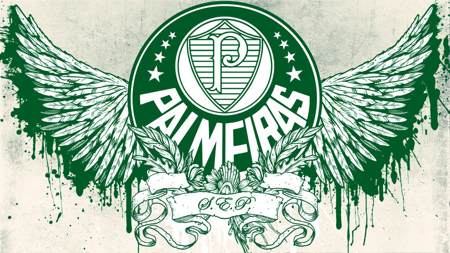

História do gigante palestra
Inicío
Sociedade Esportiva Palmeiras,conhecida popularmente como Palmeiras, é um clube poliesportivo brasileiro da cidade de São Paulo, capital do estado homônimo. Foi fundado em 26 de agosto de 1914 e suas cores, presentes no escudo e bandeira oficial, são o verde e branco.O vermelho, presente desde sua fundação em 1914, foi excluído durante a Segunda Guerra Mundial, por pressão do governo de Getúlio Vargas, na mesma reunião que formalizou a mudança de nome de Palestra Italia para Palmeiras.
Tem como modalidade esportiva principal o futebol, como um dos clubes mais vencedores e de maior relevância em todo o continente, além de estar entre aqueles com maior torcida do país.
